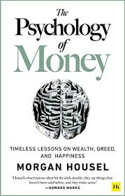

Summary of "The Psychology of Money" by Morgan Housel
"The Psychology of Money" by Morgan Housel is an insightful exploration of the complex relationship between human behavior and financial decisions. The book emphasizes that financial success is not solely determined by knowledge or technical skills, but significantly influenced by psychological factors and personal experiences.
Key Themes
Behavior Over Knowledge: Housel argues that understanding one's behavior and emotional responses to money is more crucial than mastering financial formulas. He suggests that our financial decisions are often driven by personal biases, past experiences, and societal influences.
Luck and Risk: The author highlights the roles of luck and risk in financial outcomes, noting that success can be influenced by factors beyond individual control. Recognizing this can lead to a more balanced perspective on wealth and achievement.
The Importance of Saving: Housel emphasizes that saving money is a key component of financial health. He advocates for building a financial cushion, which provides freedom and security, allowing individuals to make choices aligned with their values.
Wealth is Invisible: The book discusses the idea that true wealth is often understated and not visible in material possessions. Housel encourages readers to focus on the financial stability that allows for freedom and choice rather than displaying wealth through consumption.
Long-Term Perspective: Housel stresses the importance of a long-term view in investing and financial planning. He argues that patience and endurance are essential for accumulating wealth over time, as compounding can lead to significant growth.
Notable Lessons
No One's Crazy: Everyone has unique experiences that shape their financial decisions, and understanding these perspectives is crucial.
Never Enough: The pursuit of more can lead to irrational behavior and significant losses. It’s essential to recognize when enough is enough.
Freedom: Money’s ultimate value lies in the freedom it provides to make choices about how to live one’s life.
The Man in the Car Paradox: People often seek wealth to impress others, but in reality, others are not as impressed by possessions as we might think.
Conclusion
"The Psychology of Money" serves as a guide to understanding the emotional and psychological aspects of money management. Housel’s engaging writing style, combined with relatable anecdotes and practical insights, makes the book accessible to readers of all financial backgrounds. By focusing on the interplay between behavior and finance, Housel encourages readers to cultivate a healthier relationship with money, ultimately leading to more informed and fulfilling financial decisions.